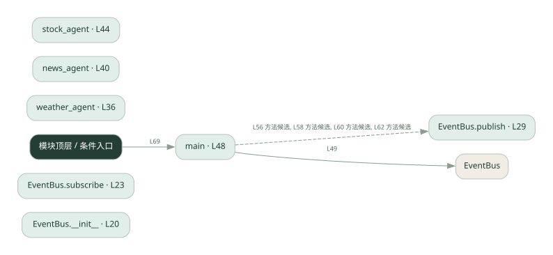

2-12 · 全课程第 32 节
事件总线
030.py
源码快照 2241fbb8f720 · 静态解析 · 2026-09-10
01 / 要完成的事
订阅者按主题注册回调，发布时找到该主题的订阅者并投递。
02 / 为什么要做
发布者不必知道所有接收者，只需要知道消息主题。
03 / 当前代码状态
subscribe 和 publish 只有 result = None，main 的订阅位置也未实现。因此当前发布消息不会触发三个 agent 回调；图中不会虚构这条调用边。
检测到 None 赋值或 pass 的位置：27, 33, 53。这些也可能是正常初始化，需结合下方函数职责与源码判断；不能仅凭没有下划线认定完成。
主要展示本地计算、内存状态或模拟流程；是否写文件/启动子进程请看调用表。 本次只做静态解析，没有运行练习，也没有替你填写或修改原代码。
04 / 调用图
打开大图 ↗实线：源码中的直接调用；虚线：函数引用/注册、动态调用或按方法名推断的候选。L 是调用所在源码行号。箭头不表示执行顺序或每次必经；分支、循环、异步调度及框架内部调用需结合源码。灰色是外部/未解析目标，橙色是动态分发；省略 print、len 和常规容器操作以减少干扰。孤立函数可能尚未接入。

先从 main 及模块入口 出发，沿箭头找到本文件函数，再查看外部调用或动态分发。右侧调用清单保留所有静态调用点，能回到原文件逐行对照。
05 / 函数定位
| 函数 / 定义行 | 职责（源码注释） | 内部调用 |
|---|---|---|
EventBus.__init__L20 | 以源码函数体为准；下列调用展示其依赖。 | 未发现显式函数调用（可能直接计算、读写状态或尚未实现） |
EventBus.subscribeL23 | 以源码函数体为准；下列调用展示其依赖。 | 未发现显式函数调用（可能直接计算、读写状态或尚未实现） |
EventBus.publishL29 | 以源码函数体为准；下列调用展示其依赖。 | 未发现显式函数调用（可能直接计算、读写状态或尚未实现） |
weather_agentL36 | 以源码函数体为准；下列调用展示其依赖。 | print |
news_agentL40 | 以源码函数体为准；下列调用展示其依赖。 | print |
stock_agentL44 | 以源码函数体为准；下列调用展示其依赖。 | print |
mainL48 | 以源码函数体为准；下列调用展示其依赖。 | EventBus, print, bus.publish |
这样做的优点
发送端和接收端更容易独立扩展。
代价与局限
内存总线没有消息持久化、可靠重投和跨进程能力；同步回调还可能阻塞发布者。
适用场景
单进程事件通知、理解发布订阅。
不宜直接照搬
要求可靠送达的跨服务消息系统。
动手检验理解
发布一个无人订阅的主题，再让两个回调订阅同一主题，观察投递次数。
有未实现位置时先预测，再补齐验证。能启动不等于逻辑正确。
查看全部 17 个静态调用 / 引用点
| 调用方 | 目标 | 源码行 | 类型 |
|---|---|---|---|
| weather_agent | print | 37 | 调用 |
| news_agent | print | 41 | 调用 |
| stock_agent | print | 45 | 调用 |
| main | EventBus | 49 | 调用 |
| main | print | 55 | 调用 |
| main | bus.publish | 56 | 调用 |
| main | print | 57 | 调用 |
| main | bus.publish | 58 | 调用 |
| main | print | 59 | 调用 |
| main | bus.publish | 60 | 调用 |
| main | print | 61 | 调用 |
| main | bus.publish | 62 | 调用 |
| <模块入口> | print | 66 | 调用 |
| <模块入口> | print | 67 | 调用 |
| <模块入口> | print | 68 | 调用 |
| <模块入口> | main | 69 | 调用 |
| <模块入口> | print | 70 | 调用 |